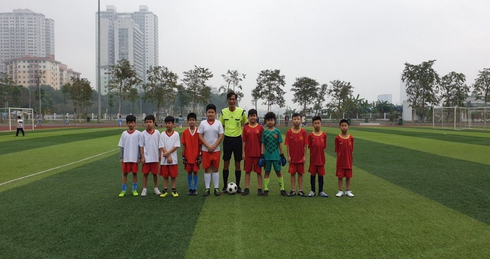

ĐỘI BÓNG ĐÁ NAM TRƯỜNG TIỂU HỌC YÊN SỞ XUẤT SẮC GIÀNH TẤM VÉ VÀO BÁN KẾT
Bên cạnh việc học tập các kiến thức thì chơi thể thao đối với trẻ em và thanh thiếu niên được đặc biệt coi trọng. Bởi vì, nó có khả năng tăng cường sức khỏe và giáo dục toàn diện. Với mục đích tiếp tục duy trì và đẩy mạnh phong trào “Toàn dân rèn luyện thân thể theo gương Bác Hồ vĩ đại”, thường xuyên tập luyện và thi đấu các môn thể thao đối với học sinh để nâng cao sức khỏe, phát triển thể chất, góp phần giáo dục toàn diện học sinh. Quận Hoàng Mai thường xuyên tổ chức các hoạt động thể dục thể thao, trong đó Hội khỏe Phù Đổng được tổ chức thường niên với nhiều môn thể thao vô cùng hấp dẫn.
Bóng đá được xem như là một trò chơi vận động góp phần rèn luyện sức khỏe được yêu thích nhất hiện nay. Bóng đá đối với các bạn học sinh Trường Tiểu học Yên Sở nói riêng và tất cả các bạn học sinh trên mọi miền Tổ quốc nói chung giúp các em rèn luyện tinh thần đoàn kết. Khi tham gia tập bóng, mỗi cầu thủ phải nghiêm túc luyện tập, việc tôn trọng kỷ luật là rất quan trọng. Những “cầu thủ nhí” sẽ được rèn giũa để hiểu được tầm quan trọng của việc tôn trọng kỷ luật trong môi trường tập thể và dần biến nó trở thành một thói quen tốt. Thói quen này sẽ giúp ích rất nhiều cho các em trong học tập và trong cuộc sống.
Giải Bóng đá nam Hội khỏe Phù Đổng quận Hoàng Mai vòng bảng được diễn ra trong không khí hào hứng, sôi nổi của các trường Tiểu học trên địa bàn quận. Với lòng say mê, tinh thần thi đấu nhiệt huyết, sự đoàn kết của các cầu thủ nhí và quá trình tập luyện chăm chỉ, đội bóng Trường Tiểu học Yên Sở đã chiến thắng qua 4 trận vòng bảng với kết quả thắng 3 trận, hòa 1 trận để có mặt tại vòng Tứ kết. Ngay tại vòng tứ kết, các cầu thủ nhí của trường đã liên tục có những pha bóng tuyệt đẹp để kết thúc trận đấu với tỉ số hòa 1 – 1 và phải trải qua lượt đá penalty đầy kịch tính với kết quả thắng 3-2 và giành suất vào bán kết.
Một số hình ảnh của giải đấu:

Các cầu thủ tự tin thi đấu (áo đỏ)
Toàn bộ các cầu thủ (áo đỏ) Trường Tiểu học Yên Sở
Hy vọng rằng với lòng say mê, tinh thần đoàn kết đội bóng đá nam trường Tiểu học Yên Sở sẽ mang niềm vui chiến thắng về cho toàn trường. Toàn thể giáo viên và các bạn học sinh trong trường cùng chờ đợi sự tỏa sáng của các cầu thủ nhí trong trận đấu sắp tới.